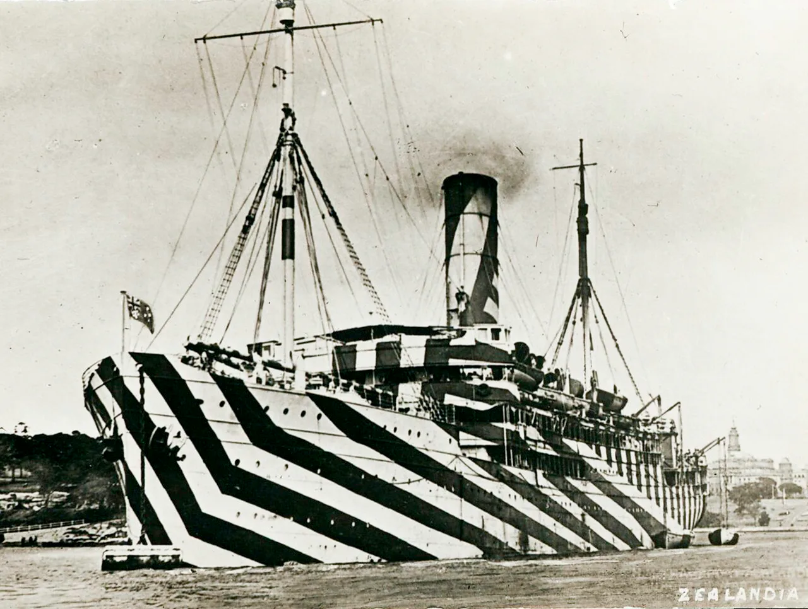
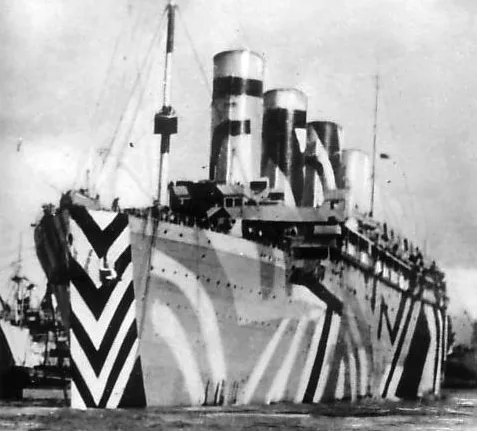
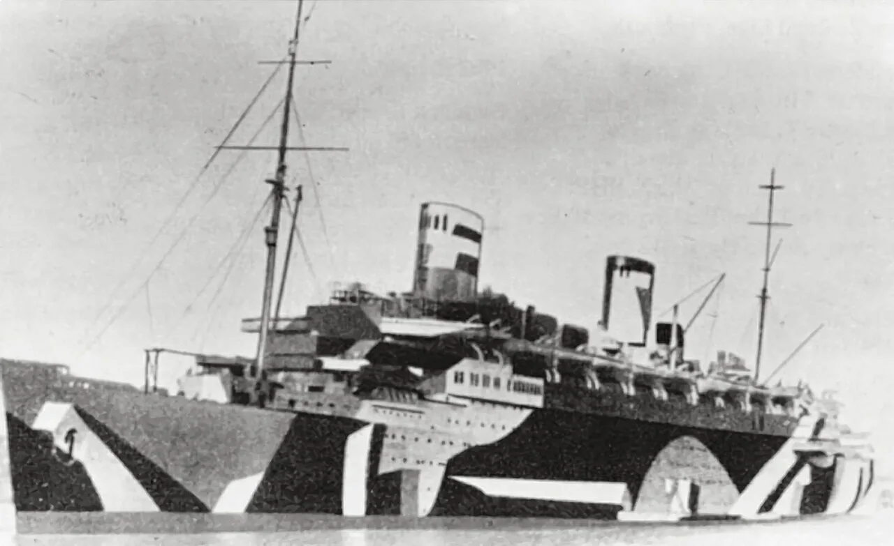

Hiding a ship at sea is hard
A ship is large, slow compared with a projectile, and usually visible against water and sky. Traditional camouflage struggles in that setting because the background changes constantly. Light, waves, weather, distance, and smoke all shift the picture. Dazzle camouflage approached the problem differently.
Instead of trying to hide the ship, the pattern tried to confuse judgment. Bold stripes and broken shapes could make it harder for an observer to estimate a ship's heading, size, speed, or distance. That mattered because a submarine attack required prediction. A torpedo was aimed not where the ship was, but where it would be.

A visual design for a mathematical problem
The strange paint turned perception into part of the defense system. The ship still existed in plain sight, but the useful information about its motion became less obvious. This is why dazzle is such a good WeirdWeek topic: the design looks decorative until you understand the job.
The patterns were not random doodles. They were disruptive surfaces placed on a moving object under wartime constraints. Even if historians continue to debate how effective the technique was in practice, the design logic is clear: when you cannot remove a target, you may still distort the measurements needed to hit it.
Why it still feels modern
Dazzle sits at the intersection of art, optics, military necessity, and industrial design. It also shows that good design is not always quiet or elegant. Sometimes the right design is loud because the problem is not beauty; the problem is enemy estimation.
The lesson travels beyond ships. Many systems use disruption rather than concealment. Security patterns on envelopes, anti-copy backgrounds, and some digital obfuscation strategies all share a related idea: make the signal harder to extract even if the object remains visible.
The observer had a calculation to make
A submarine commander did not need a beautiful view of a target. The attack problem demanded estimates: bearing, range, speed, and heading, followed by a prediction of where ship and torpedo might intersect. Dazzle patterns targeted that chain of judgment. Curves, diagonals, false bow waves, and broken silhouettes could interfere with cues the eye used to read orientation.
This makes dazzle different from a pattern designed for a stationary background. It was attached to a moving hull, viewed through changing weather and often through optical equipment. The pattern's job was not to look confusing in a photograph at the dock. Its job was to introduce uncertainty during a brief, consequential observation.

How designs became paint on steel
Dazzle was also an organizational system. Artists and designers produced schemes; model ships and viewing devices helped evaluate patterns; shipyards translated plans across large, irregular hulls. A concept only mattered if workers could reproduce it at scale while ships continued to enter service.
That production story is easy to lose because the photographs are so visually striking. Yet the real design object included templates, paint specifications, labor, scheduling, and the need to distinguish one scheme from another. The artwork was part of a wartime workflow.

Was it effective?
The historical answer is more cautious than the popular story. Dazzle was widely used, but wartime data made clean evaluation difficult. Ships differed in route, escort, exposure, speed, and enemy contact. Even a successful distortion would be hard to isolate after an attack missed or never happened.
That uncertainty does not make the idea meaningless. It makes dazzle a useful study in design under incomplete evidence: a plausible perceptual intervention, deployed at scale, whose measurable effect remained difficult to separate from a changing war.